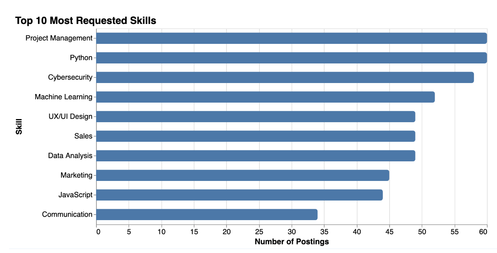
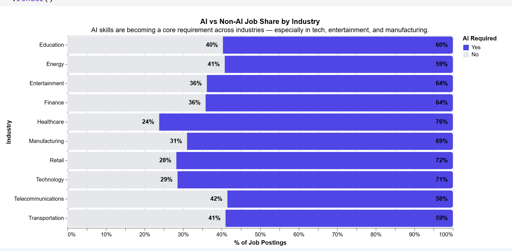
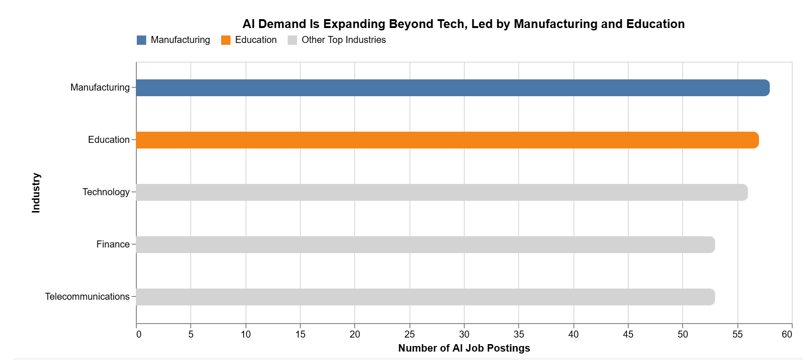

Industry Comparison
Top 5 Industries by AI Job Postings

Insight: Manufacturing and Education are leading the pack, suggesting AI is being used heavily for physical production and academic operations.
Roles & Adoption Levels
Comparing Technical vs. Non-Technical AI usage.

The AI Skill Ecosystem
Frequency of required skills in high-adoption roles.
